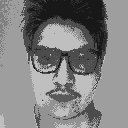

Team
Pedro Victor
At eleven years old, Pedro was a fan of the Sonic The Hedgehog franchise. One day, he grabs a copy of GameMaker and starts making his own game designs. With this, Pedro enters the Sonic fangame community and starts experimenting and creating his own interactive experiences. He spent most of his years mastering the art of GameMaker and learning the ins and outs of it, such as online programming, modding and much more. Pedro is also an artist specialized in making colorful and exciting pixel art and digital art.
Gabriel Casanova
Gabriel Casanova is a developer and game designer that works with various languages and frameworks, including GameMaker: Studio. Met Pedro in 2017, and immediately started making games and partnering with him. A retro gamer at heart, Gabriel likes to build fun experiences for players. He is also a designer, making logos and websites along with development tools to make the whole creation process easier and fun.